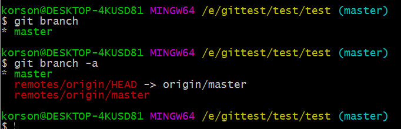
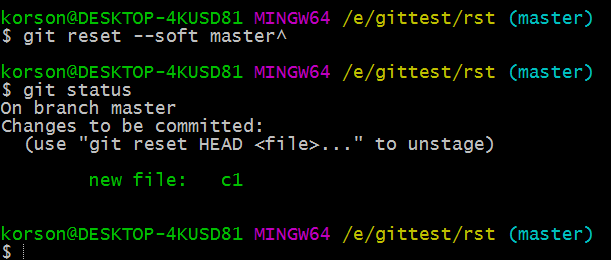
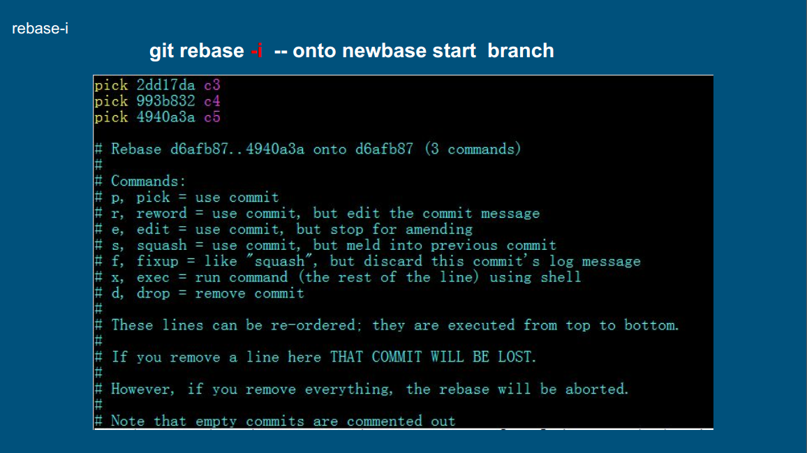
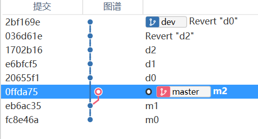

Git笔记（四）
第十六课. rebase
当前分支树：
rebase讲解：
rebase步骤：
执行命令：git rebase --onto master master dev
上面的指令可以简写，如果已经在dev分支上，可以直接执行：
git rebase master
第十七节.远程分支
远程分支存放在.git/refs/remotes/origin/
可以使用git branch -a查看本地和远程的所有分支

可以使用git fetch获取到远程分支：
可以查看当前分支情况：
可以看到远程分支已经被获取到本地，并且是本地分支的最新提交，如果想将二者合并，可以直接执行：git merge origin/master
就可以将这两个分支进行合并了：
git pull相当于是git fetch和git merge origin/master进行合并
执行git branch -vv可以查看一个分支的跟踪分支
现在我们在远程新建一个dev分支
然后在本地执行git fetch命令
切换到dev：git checkout dev
查看分支树：
查看本地dev分支的跟踪树：
可以看到，远程的dev分支就是本地dev分支的跟踪分支，远程master分支就是本地master分支的跟踪分支。
第十八节.reset命令
git reset -- .
当前暂存区中有c0，c1两个文件：
而代码仓库只有已经提交的c0文件
现在执行git reset -- .
可以看到代码仓库把暂存区全部覆盖，所以没有了c1文件
git reset --soft chash
现在工作目录有c0和c1,暂存区只有c0，现在再次将工作目录文件添加并提交：
发现提交信息写错了，想重新提交：

由上面可以看到c1已经进入暂存区，而且待提交
如果想直接修改最后一次提交的提交信息，可以直接敲：git commit --amend -m ‘相输入的内容’
git reset --mixed chash
可以更新commit记录并覆盖暂存区。
可以看到c1已经不被跟踪了
git reset --hard chash
上面这个指令可以使分支回滚到上一次提交记录上：git reset chash
上面这个指令默认选项是mixed
总结一下：
• –soft – 缓存区和工作目录都不会被改变
• –mixed – 默认选项。缓存区和你指定的提交同步，但工作目录不受影响
• –hard – 缓存区和工作目录都同步到你指定的提交
第十九课.交互式rebase

第二十节.cherry-pick
git cherry-pick chash(想要挑选的commit可以合并到当前分支上去)：
第二十一节.revert
当前状态：
发现d2提交有问题，可以对d2的提交进行撤销：git revert 1702
保存后变为：
再对d0进行撤销：

上面的revert操作相当于undo操作，就是撤销。
现在想回到最初的d2，只需要执行操作：git reset --hard 1702
就可以得到如下的分支提交树：
切换到master,
再对dev和master进行merge
对merge后的提交进行撤销，首先我们可以查看79ef的情况：
可以看到，这个merge是由622f4d3和1702b16合并而成的，
所以可以执行命令：git revert -m 1 79ef
上面的1就是指定622f4d3为回退后的主分支
可以得到如下的界面：
保存并退出：:wq
可以得到如下版本树：
revert小结：